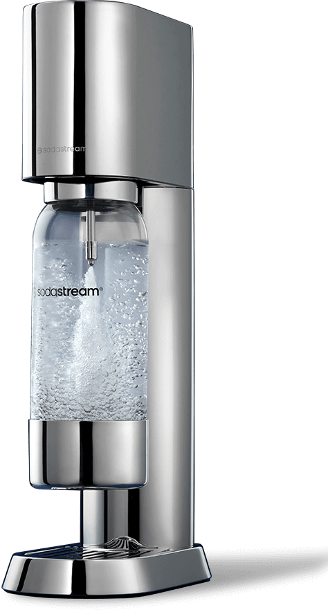
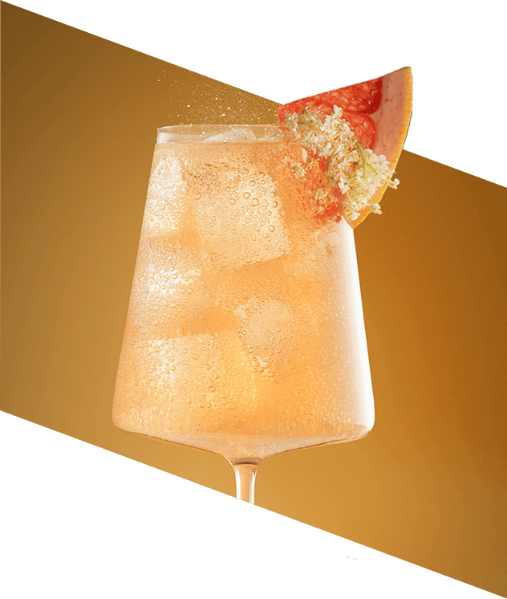

<!DOCTYPE html>
<html lang="pl">
  <head>
    <meta charset="UTF-8" />
    <meta name="viewport" content="width=device-width, initial-scale=1.0" />
    <title>SODAstream</title>
    <link rel="stylesheet" href="style.css" />
  </head>
  <body>
    <div class="es-rc" id="es-rc-content">
      <div class="es-kv">
        <div class="es-kv__container">
          <div class="es-kv__content">
            <div class="es-kv__logo">
              
            </div>
            <h2 class="es-kv__title">
              Harmonia formy <br />i&nbsp;funkcjonalności
            </h2>

            <p class="es-kv__text">
              Poznaj nowy, ekskluzywny saturator do wody gazowanej SodaStream
              Ensō, który łączy minimalistyczny design z nowoczesną technologią,
              oferując najwyższy komfort gazowania wody i&nbsp;tworzenia napojów
              gazowanych.
            </p>
          </div>
          <div class="es-kv__packshot">
            
            
          </div>
        </div>
        <div class="es-kv__footer-container">
          <p class="es-kv__subtitle">Estetyka Japońskiego Wzornictwa</p>
          <div class="es-kv__footer">
            Stworzony przez cenionego projektanta Naoto Fukasawę, saturator Ensō
            jest dziełem sztuki użytkowej, w którym każdy detal podkreśla jego
            unikalność i&nbsp;elegancję.
          </div>
        </div>
      </div>

      <div class="es-eco">
        <div class="es-eco__container">
          <h3 class="es-eco__title">Styl <br />w&nbsp;Każdej Kuchni</h3>
          
          <p class="es-eco__text">
            Dzięki najwyższej jakości materiałom i&nbsp;precyzyjnemu wykonaniu
            saturator SodaStream Ensō stanie się wyjątkową ozdobą każdej kuchni,
            dodając jej elegancji i&nbsp;niepowtarzalnego stylu. Jego
            minimalistyczny design doskonale wpisuje się w modne aranżacje
            wnętrz, w&nbsp;tym styl loftowy, łącząc funkcjonalność
            z&nbsp;wyrafinowaną estetyką.
          </p>
        </div>
      </div>

      <div class="es-eco">
        <div class="es-eco__container">
          <h3 class="es-eco__title es-eco__title--blue">
            Prostota i&nbsp;styl w&nbsp;jednym
          </h3>
          <p class="es-eco__text">
            Ekspres do gazowania wody SodaStream Ensō łączy wyrafinowaną
            estetykę z&nbsp;nowoczesną technologią, zapewniając komfort
            i&nbsp;wygodę użytkowania każdego dnia.
          </p>

          <div class="es-eco__content">
            <div class="es-eco__single">
              <p class="es-eco__number">
                Bottle Snap & Lock – Prosty&nbsp;Montaż na "Klik"
              </p>
              
              <p class="es-eco__text">
                Szybkie i&nbsp;intuicyjne<br />
                mocowanie butelki <br />umożliwia łatwe <br />zabezpieczenie
                oraz <br />wyjęcie jednym ruchem.
              </p>
            </div>
            <div class="es-eco__single">
              <p class="es-eco__number">
                Quick Connect – <br />Błyskawiczna Instalacja Cylindra CO₂
              </p>
              
              <p class="es-eco__text">
                System Quick Connect i <br />wysuwana komora <br />pozwalają na
                prosty i<br />intuicyjny montaż cylindra<br />
                bez wkręcania.
              </p>
            </div>
            <div class="es-eco__single">
              <p class="es-eco__number">
                Stal Nierdzewna –<br />
                Trwałość na Lata
              </p>
              
              <p class="es-eco__text">
                Wykonane z wytrzymałej <br />stali nierdzewnej elementy<br />
                zapewniają długoletnią <br />trwałość i&nbsp;łatwość w<br />
                utrzymaniu czystości.
              </p>
            </div>
          </div>
        </div>
      </div>

      <div class="es-natural">
        <div class="es-natural__container">
          <p class="es-natural__subtitle">
            Elegancja i&nbsp;funkcjonalność na co dzień?
          </p>

          <p class="es-natural__description">
            <span class="es-natural__subtitle--bold">
              Stylowa Butelka z Tritanu
            </span>

            W zestawie z SodaStream Ensō znajduje się elegancka butelka,
            zaprojektowana specjalnie dla tego modelu. Została wykonana
            z&nbsp;trwałego Tritanu i&nbsp;ozdobiona połyskującymi detalami ze
            stali nierdzewnej, które dodają jej elegancji i&nbsp;wyjątkowego
            charakteru. Odporna na matowienie i&nbsp;wysokie temperatury,
            idealnie sprawdza się na co dzień, zachowując stylowy wygląd
            i&nbsp;doskonale trzymając bąbelki przez 4 lata użytkowania.
          </p>
          <ul class="es-natural__list">
            <li class="es-natural__item">1 litr pojemności</li>
            <li class="es-natural__item">
              Dostosowana do mycia w&nbsp;zmywarce
            </li>
            <li class="es-natural__item">Wolna od BPA</li>
            <li class="es-natural__item">
              Elegancki design z detalami ze stali nierdzewnej
            </li>
            <li class="es-natural__item">
              Odłączana podstawa dla maksymalnej higieny
            </li>
            <li class="es-natural__item">
              Kompatybilna z modelami: Enso, Art i&nbsp;Terra
            </li>
          </ul>
          <p class="es-natural__description">
            <span class="es-natural__subtitle--bold">
              Bezpieczeństwo i&nbsp;Wygoda
            </span>

            Butelka nie zawiera szkodliwego dla zdrowia BPA, co zapewnia
            bezpieczne dla zdrowia użytkowanie. Zarówno butelkę, jak i&nbsp;jej
            zdejmowaną podstawę można myć w zmywarce, co gwarantuje pełną
            higienę przy minimalnym wysiłku, oszczędzając Twój czas
            i&nbsp;energię.
          </p>
          <div class="es-natural__picture">
            <!--  -->
          </div>
        </div>
      </div>

      <div class="es-eco">
        <div class="es-eco__picture">
          <!--  -->
        </div>
        <div class="es-eco__container">
          <p class="es-eco__subtitle">Domowe orzeźwienie w stylu Eko</p>

          <p class="es-eco__description">
            Poznaj SodaStream i&nbsp;odkryj nowy wymiar świadomej konsumpcji.
            Teraz z&nbsp;łatwością zamienisz jednorazowe plastikowe butelki na
            eleganckie, wielorazowe odpowiedniki, wprowadzając proekologiczne
            zmiany do swojego życia.
            <br /><br />
            Ciesz się nieograniczonym dostępem do świeżej wody gazowanej
            i&nbsp;twórz ulubione napoje bez wychodzenia z domu i&nbsp;noszenia
            ciężkich zgrzewek ze sklepu. Z SodaStream dbasz o planetę
            i&nbsp;o&nbsp;swój komfort.
          </p>
        </div>
      </div>

      <div class="es-art">
        <div class="es-art__container">
          <p class="es-art__subtitle">
            Sztuka tworzenia smaków <br />z SodaStream Ensō
          </p>
          <p class="es-art__text">
            Zanurz się w świecie wyjątkowych doznań smakowych i&nbsp;daj się
            ponieść kreatywności. Z saturatorem SodaStream Ensō stworzysz
            niepowtarzalne kompozycje, idealnie dopasowane do Twoich
            preferencji. Puść wodze fantazji i&nbsp;eksperymentuj
            z&nbsp;intensywnością bąbelków, poziomem słodkości oraz dodatkami.
            Sezonowe owoce, aromatyczne zioła, a może szczypta egzotycznych
            przypraw? Wybór należy do Ciebie!
          </p>
        </div>
        <div class="es-art__steps">
          <div class="es-art__steps-item">
            <p class="es-art__steps-item-title">gazuj</p>
            
            <p class="es-art__steps-item-description">
              Napełnij butelkę SodaStream zimną wodą z kranu i&nbsp;nagazuj tak,
              jak lubisz.
            </p>
          </div>
          <div class="es-art__steps-item">
            <p class="es-art__steps-item-title">miksuj</p>
            
            <p class="es-art__steps-item-description">
              Połącz bąbelki z syropem, delikatnie wymieszaj i&nbsp;przelej do
              szklanki
            </p>
          </div>
          <div class="es-art__steps-item">
            <p class="es-art__steps-item-title">smakuj</p>
            
            <p class="es-art__steps-item-description">
              Napój gotowy – teraz czas na chwilę przyjemności
            </p>
          </div>
        </div>
      </div>

      <div class="es-coctails">
        <div class="es-coctails__container">
          <div class="es-coctails__left">
            
            
          </div>
          <div class="es-coctails__right">
            <p class="es-coctails__right-title">
              Perfekcyjne koktajle i&nbsp;moktajle na 1, 2, tssst!
            </p>
            
          </div>
        </div>
        <p class="es-coctails__description">
          Poznaj linię SodaStream Crafted – wyjątkowe bezalkoholowe bazy do
          koktajli i&nbsp;moktajli, które nadadzą Twoim napojom niepowtarzalny
          charakter. Wystarczy dodać wodę gazowaną i&nbsp;ulubione dodatki, by
          każdemu dniu dodać odrobinę finezji i&nbsp;kreatywności.
        </p>
        <div class="es-coctails__tastes">
          <div class="es-coctails__tastes-single">
            <p class="es-coctails__tastes-single-title">
              SodaStream Crafted Brzoskwinia & Imbir:
            </p>
            <p class="es-coctails__tastes-single-description">
              Owocny mariaż smaków słodkiej brzoskwiniz pikantnym imbirem
              zachwyca balansemi przyjemnie orzeźwia
            </p>
          </div>
          <div class="es-coctails__tastes-single">
            <p class="es-coctails__tastes-single-title">
              SodaStream Crafted Grejpfrut & Kwiat Czarnego Bzu:
            </p>
            <p class="es-coctails__tastes-single-description">
              Wyrafinowana kompozycja smaków grejpfruta i romantycznych kwiatów
              czarnego bzu oczaruje Twoich gości
            </p>
          </div>
          <div class="es-coctails__tastes-single">
            <p class="es-coctails__tastes-single-title">
              SodaStream Crafted Ananas & Jalapeño:
            </p>
            <p class="es-coctails__tastes-single-description">
              Unikalne połączenie smaków tropikalnego ananasa i&nbsp;ognistego
              jalapeño, które rozpali wszystkie zmysły
            </p>
          </div>
        </div>
      </div>

      <div class="es-taste">
        
        <div class="es-taste__container">
          <h3 class="es-taste__subtitle">
            Jedna SodaStream – wiele możliwości
          </h3>

          
          <p class="es-taste__text">
            Odkryj szeroką gamę syropów SodaStream! Czaruj smakiem klasycznych
            kompozycji lub sięgaj po owocowe warianty jak Kwiat Czarnego Bzu,
            Marakuja i&nbsp;Owoce leśne. Niezależnie od okazji, twórz wyjątkowe
            napoje – od słodkich, owocowych propozycji po warianty bez dodatku
            cukru. Poczuj wolność wyboru i&nbsp;eksploruj świat smaków bez
            ograniczeń!
          </p>
        </div>
      </div>
    </div>
  </body>
</html>
